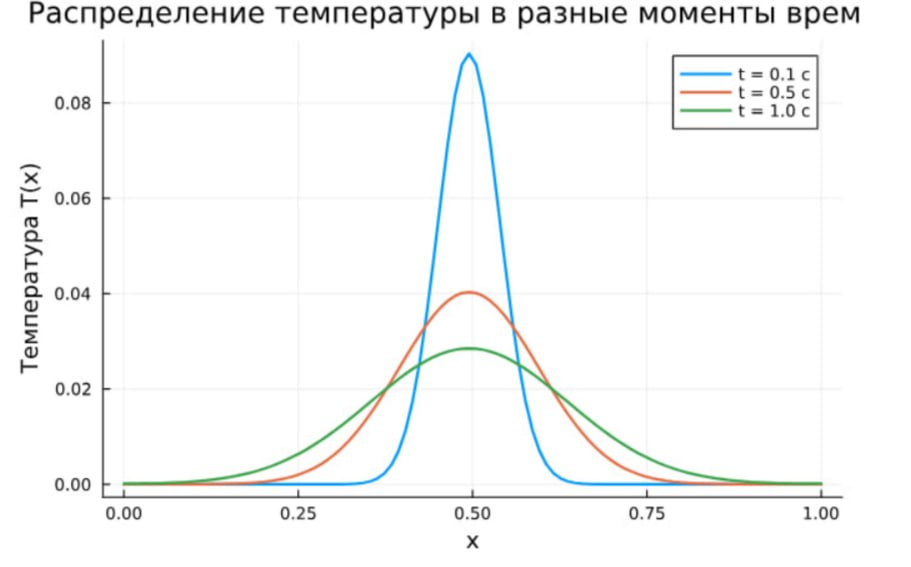

Теплопроводность и детерминированное горения
Горяйнова А.А.
Гузева И.Н.
Извекова М. П.
Алиева М. А.
Шошина Е. А.
Российский университет дружбы народов, Москва, Россия
$$ T_i^{n+1} = T_i^n + \chi \frac{\Delta t}{h^2} (T_{i+1}^n - 2T_i^n + T_{i-1}^n) - \Delta N_i $$
$$ \Delta N_i = -\frac{N_i^n}{\tau} e^{-E/T_i^n} \Delta t $$
Nin + 1 = Nin + ΔNi
using Plots
# Параметры
L = 1.0 # Длина области
nx = 100 # Количество узлов по x
dx = L / (nx - 1) # Шаг по пространству
dt = 0.001 # Шаг по времени
nt = 1500 # Количество временных шагов
χ = 0.01 # Коэффициент температуропроводности
τ = 0.05 # Характеристическое время реакции
Q = 1.0 # Удельное тепловыделение
E = 5.0 # Безразмерная энергия активации# Проверка условия устойчивости
stability = χ * dt / dx^2
println("Stability condition (χ dt / dx^2): ", stability)
# Инициализация массивов
x = range(0, L, length=nx)
T = zeros(nx) # Температура
N = ones(nx) # Концентрация реагента (начально 1)
T[nx ÷ 2] = 1.0 # Инициируем горение в середине
# Хранение снимков температуры
T_snapshots = Dict{Float64, Vector{Float64}}()
times_to_save = [0.1, 0.5, 1.0]# Моделирование
for n in 1:nt
ΔN = -N ./ τ .* exp.(-E ./ T) * dt
T_new = copy(T)
for i in 2:nx-1
T_new[i] = T[i] + χ * dt / dx^2 * (T[i+1] - 2*T[i] + T[i-1]) - ΔN[i] * Q
end
# Адиабатические граничные условия
T_new[1] = T_new[3]
T_new[end] = T_new[end-2]
N .= N .+ ΔN
T .= T_new
current_time = n * dt
if any(t -> isapprox(current_time, t; atol=1e-4), times_to_save)
T_snapshots[current_time] = copy(T)
end
end# Построение графика с тремя траекториями
p = plot(x, T_snapshots[0.1], label="t = 0.1 с", lw=2, xlabel="x", ylabel="T(x)", title="Распределение температуры в разные моменты времени", ylim=(0, 0.1))
plot!(p, x, T_snapshots[0.5], label="t = 0.5 с", lw=2)
plot!(p, x, T_snapshots[1.0], label="t = 1.0 с", lw=2)
# Сохранение графика
savefig(p, "temp_trajectories.png")
# Отображение графика
display(p)